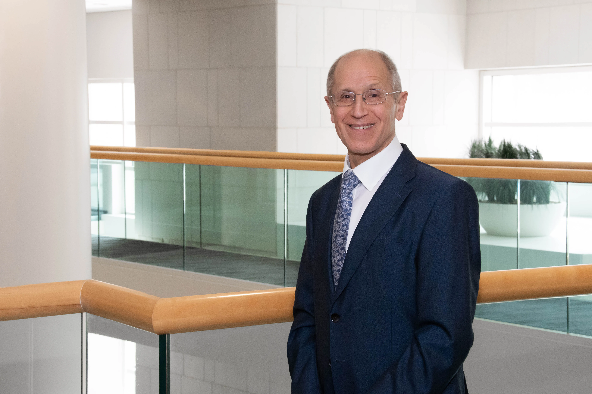

Gerson, Stanton L., M.D.
Dean, School of Medicine
Senior Vice President for Medical Affairs in Case Western Reserve University

Contact Information
Office Address: Case Western Reserve University
Biomedical Reseach Building, Rm 113
10900 Euclid Avenue
Cleveland, OH 44106-4921
Office Phone: (216)368-2825
Beeper: 33263
E-mail: Stanton.gerson@case.edu
Cell: (216)926-6966
Facsimile: (216)368-2820
Education
School: Harvard College
Degree: A.B.
Dates: 1973
School: Harvard Medical School
Degree: M.D.
Dates: 1973-1977
Honor
- 1987 Edward Mallinckrodt Jr. Foundation Scholar
- 1997 Asa & Patricia Shiverick – Jane B. Shiverick (Tripp)
- Professor of Hematologic Oncology
- 2007 Mt Sinai Foundation, Cleveland, Maurice Salzman Award for Distinguished service with the Case Comprehensive Cancer Center
- 2008 American Cancer Society Heroes of Hope Award
- 2008 Honorary Alumnus of the Year Award, Medical Alumni Association, CWRU
- 2008-2015 Named one of Castle Connolly America's Top Doctors
- 2011 Dr. Rogers Prize in honor of Dr. Rogers from The Lotte & John Hecht Memorial Foundation in Canada. The Prize has been given to Dr. Gerson for his exceptional contributions in the field of Integrative Oncology. He gave the keynote address as the Dr. Rogers Prize Lecture at the 8th International Conference of the Society for Integrative Oncology (11/10-12/11) titled "The Future of Integrative Oncology".
- 2012 Case Western Reserve Medal for Excellence in Health Science Innovation.
- 2013- CWRU Distinguished University Professor
- 2015 The Academy of Medicine Education Foundation, John H Budd, MD Distinguished Member Award
- 2019 National Academy of Inventors as Senior Member
Selected Recent Publications
Original Paper:
- Rogers LR, Ostrom QT, Scroer J, Vengoechea J, Li L, Gerson S, Nock CJ, Machtay M, Selman W, Lo S, Sloan AE, Barnholtz-Sloan JS. Association of metabolic syndrome with glioblastoma: a retrospective cohort study and review. Neurooncol Pract 2020 Mar 31;7(5):541-548. Doi:1031093/nop/npaa011. ECollection Oct. PMID: 33014395
- Chamoun K, Firoozmand A, Caimi P, Fu P, Cao S, Otegbeye F, Metheny L, Patel S, Gerson SL, Boughan K, de Lima M, Malek E. Socioeconimic factors and survival of multiple myeloma patients. Cancers (Basel). 2021 Feb 3;13(4):590. Doi: 10.3390/cancers 13040590. PMID: 3354626
- Gerson SL, Shaw K, Harrison LB, Holcombe RF, Hutchins L, Lee CB, Loebrer PJ, Mulkerin D, Purcell WT, Teston L, Weiner LM, Weiner GJ. Status of Cancer Care at Network Sites of the Nation's Academic Cancer Centers. Natl Compr Canc Netw 2021 Mar 11:1-7. Coi: 10.6004/jnccn 2020.7656. Online ahead of print PMIC: 33706258
- Smith JN, Dawson DM, Christo KF, Jogasuria AP, Cameron MJ, Antezak MI, Ready JM, Gerson SL, Markowitz SD, Desai AB. 15-PGDH inhibition activates the splenic niche to promote hematopoietic regeneration. JCI Insight 2021 Mar 22:6(6):e143658. Doi: 10.1172/jci.insight 143658. PMID: 33600377
- Nguyen MT, Moiani D, Ahmed Z, Arvai AS, Namioshi S, Shin DS, Fedorov Y, Selvik EJ, Jones DE, Pink J, Yan Y, Vaverty DJ, Nagel ZD, Tainer JA, Gerson SL. An effective human eracil-DNA glycosylase inhibitor targets the open pre-catalytic active site conformation. Prog Biophys Mol Biol. 2021 Aug; 163:143-159. Doi: 10.1016/j.pbiomolbio.2021.02.004. Epub 2021 Mar 3 PMID: 33675849
- Biswas T, Dowlati A, Konos CA, Pink JJ, Oleinick NL, Malik S, Fu P, Cao S, Bruno DS, Bajor DL, Patel M, Gerson SL, Machtay M. Adding base-excision repair inhibitor TRC102 to standard pemetrexed-platinum-radiation in patients with advanced nonsquamous non-small cell lung cancer: results of a Phase I Trial. Clin Cancer Res 2022 Feb 15;28(4):646-652. Doi: 10.1158/1078-0432.CCR-21-2025. PMID: 34740922
- Jajosky AN, Mitchell AL, Akgul M, Shetty S, Yoest JM, Gerson SL, Sadri N, Oduro KA Jr. Identification of a cancer-predisposing germline POT1 p.lle49Metfs*7 variant by targeted sequencing of a splenic marginal zone lymphoma. Genes (Basel). 2022 Mar 26;13(4):591. Doi: 10.3390/genes13040591. PMID: 35456397
- Ho WJ, Smith JNP, Park YS, Hadiono M, Christo K, Jogasuri A, Zhang Y, Broncano AV, Kasturi I, Dawson DM, Gerson SL, Markowitz SD, Desai AB. 15-PGDH regulates hematopoietic and gastrointestinal fitness during aging. PLoS One. 2022 May 19;17(5):e0268787. Doi: 10.1371/journal pone.0268787. eCollection 2022. PMID: 35587945
- Baluku JB, Namiiro S, Namanda B, Katusabe S, Namusoke D, Nkonge R, Okecha T, Nassaazi C, Niyonzima N, Bogere N, Nuwagira E, Nabwana M, Ssekamatte P, Andia-Biraro I, Worodria W, Salata R, Mfinanga S, Gerson S, Kirenga B. Mycobacterium tuberculosis infection and cytogenetic abnormalities among people with HIV. Mutat Res Genet Toxicol Environ Mutagen. 2023 May-Jun;888:503640. doi: 10.1016/j.mrgentox.2023.503640. PMID: 37188437
- Qing Y, Chan R, Fu P, Cullen J, Miron A, Jacobson JM, Pink J, Gerson SL. Impact of age, antiretroviral therapy, and cancer on epigenetic aging in people living with HIV. Cancer Med. 2023 May;12(9):11010-11019. doi: 10.1002/cam4.5809. Epub 2023 Mar 23.PMID: 36951656
- Baluku JB, Namiiro S, Namanda B, Nabwana M, Andia-Biraro, IA, Worodria W, Salata R, Mfinanga S, Gerson S, Krenga B. Neutrophil-lymphocyte and platelet-lymphocyte ratios in distinguishing lung cancer in people with HIV. Hindawi Disease Markers, vol. 2024 Article ID 8822024, 6 pages